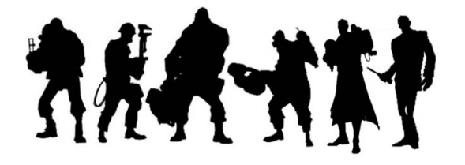

1.Ideas
Every good idea borders on the stupid.
~ Michel Gondry
I like this quote because many game ideas often sound stupid. Try these on for size:
- A yellow creature eats dots while being chased by ghost monsters.
- A plumber jumps on the heads of mushrooms to find his girlfriend.
- A prince rebuilds stars by rolling balls of junk into bigger balls of junk.
All of those stupid - sounding ideas ended up being games that made lots and lots of money. I guess they aren ’ t so stupid after all. To me, the lesson is, never dismiss a game idea, even if it does sound stupid.
So, where do I get my own stupid ideas to turn into video games? The traditional way to get an idea is to get inspired. The good news is that a good game idea can come from anywhere. Here is a list of things I do to get inspired. I suggest you try them yourself the next time you need to come up with an idea
- Read something you normally wouldn ’ t read.
- Take a walk, drive or shower
- Attend a lecture
- Play a game, preferably a bad one.
- Regardless of the above, follow your passion.

If you think something is innovative, it just means you haven ’ t been
paying
attention.
~ Scott Rogers
While I am sure there is probably still a completely original idea out there in the galaxy of ideas, the majority of gameplay design works by each game building upon its predecessor. I truly believe that this strategy is one of the keys to creating great game design. Even the most innovative games like the aforementioned PaRappa, Sims, and Braid had their predecessors in Simon, Sim City6 , and Blinx: the Time Sweeper.
2.Writing the story
Almost since the dawn of gaming, designers have debated which is more important: story or gameplay? Some designers believe games require a story to engage the player. Other designers think a story is what people use to describe play when it is finished. Pro - story designers reply that games are an artistic medium used to tell a story. Anti - story designers counter that a story is what you watch while the game loads. Designers at Game Developer Conferences all around the world face off against each other: one group yelling “Bioshock! ” while the other side shouts “Doom! ” back. Silly designers. They are both right and wrong. A game doesn ’ t need to have a story, and yet it always has a story. Perplexing? While you are chewing that over, let ’ s look at the classical definition of “ story ” as taught by everyone from Aristotle to very famous screenwriters. Here ’ s the most basic structure of a story:


Remember that no matter what your story is about, a story ALWAYS has a beginning, middle, and end. Hollywood has spent many years analyzing and deconstructing the story. Don’t feel like you have to reinvent the wheel; learn what they have. Read screenwriting books, take classes, visit screenwriting websites. But you don’t have to feel chained to a standard story structure like Joseph Campbell’s “Hero’s Journey” or Syd Field’s “Three Act Structure.” Try using another medium’s structures to tell your story. How is a story told in a song? In a TV news report? In a Homeric poem? Or try looking to non - Western - world storytelling for inspiration.
Just remember that video games are an interactive medium, and as William Shakespeare reminds us, “The play’s the thing.” That was one guy who knew story, and he was pretty smart for someone who never played a video game. If gameplay is the meat of the game, then story should be the salt: just enough will add flavor but too much can ruin everything and kill you.
Monty Python and the Holy Grail features typical (if not archetypical) characters: King Arthur and his knights of the round table. These stalwart knights travel through medieval England on their quest for the Holy Grail. However, that quest is filled with weird activities like designing shrubs for the knights that say “Ni!” or being slaughtered by the killer rabbit of Caerbannog.

3.Characters
FORM FOLLOWS FUNCTION
Let this rule be your motto when designing anything. It will come into play more importantly later on in the book, but should be your guide especially when designing your game character. There are several great books on how to design a character visually , so I won’t go into great detail about this, but let me pass on some of the high level things to keep in mind.
As you are creating your character, you want to think about his or her personality. What are the three personality traits that you would use to describe your hero?
- Mario: courageous, bouncy, happy
- Sonic: fast, cool, edgy
- Kratos: brutal, vicious, selfish
Another old trick that all professional character designers and animators use is the silhouette. A strong, clear silhouette of a character is important for many reasons:
- Tells us the character ’ s personality at a glance.
- Helps distinguish one character from another.
- Identifi es “ friendly ” or “ enemy ” characters.
- Helps the character stand out against background and world elements.
For example, let ’ s look at the silhouettes of the player characters of Team Fortress 2.
Due to their unique silhouettes, you can immediately distinguish one character from another. In the image above, the Heavy is clearly distinguished from the Pyro from the Spy. Body language plays a huge part in creating unique personalities. Not only does their silhouette give you a snapshot of their personality, but it provides the player with a quick way to recognize the character. This is important during gameplay so you know who is gunning for you and can adjust your strategy — or more importantly, who is in your sights. Boom. Headshot.
4.Movement
Let’s talk about bipedal characters for a moment. Every character walks. But many gamers will complain if a character walks too slowly. Instead, trying making the walk work for you. If you really want to screw with your players, here is something I have learned.
Why have I done this hateful thing? Because making the player walk to the left makes people feel “ ill at ease ” and can be used to psychological effect. If you really want to mess with your player ’ s head, make them travel to the left for the entire level. Most of them won ’ t be able to figure out what is “ wrong ” about the level, just that something is (quite literally) not right.
While it is fun to mess with the player’s head, there is something that many designers forget when designing their levels. If you are describing the action in your level walkthroughs4 and you find yourself telling your colleagues “and then the character walks through here” , this should set off very loud klaxons.